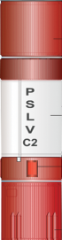

Indian Space Research Organisation, formed in 1969, superseded the erstwhile INCOSPAR. Vikram Sarabhai, having identified the role and importance of space technology in a Nation's development, provided ISRO the necessary direction to function as an agent of development.
MARS ORBITER MISSION
PSLV
The Indian Space Research Organisation’s (ISRO) Polar Satellite Launch Vehicle (PSLV), which costs nearly ₹200 crore, is a third-generation rocket. It is the first Indian launch vehicle to be equipped with liquid stages. PSLV has three variants: PSLV-Core alone (PSLV-CA) without the solid strap-on motors; a PSLV with six solid strap-on boosters; and PSLV-XL, the top model, with six extended solid strap-on boosters.
PS4 Stage as orbital platform
PS4 has carried hosted payloads like AAM on PSLV-C8,[31] Rubin 9.1/Rubin 9.2 on PSLV-C14[35] and mRESINS on PSLV-C21.[36] But now, PS4 is being augmented to serve as a long duration orbital platform after completion of primary mission. PS4 Orbital Platform (PS4-OP) will have its own power supply, telemetry package, data storage and attitude control for hosted payloads.
Strap-on booster
While the PSLV-G uses six HTPB based solid strap-on motors of 9 tonnes each and PSLV-XL uses 6 extended strap-ons of 12 tonnes each, the PSLV-CA (core alone version) does not use any strap-on motors.
FIRST STAGE
In the first stage (PS1), the PSLV uses the S139 solid rocket motor, which is augmented by six solid strap-on boosters. It provides the launcher the high thrust that is required for lift-off. It uses the S139 solid rocket booster, which contains nearly 138 tonnes of Hydroxyl Terminated Polybutadiene (HTPB) based propellant.
ENGINE
6
BURNTIME
425 SEC
Thrust At Sea Level
14.66kN

PAYLOAD
Due to its unmatched reliability, PSLV has also been used to launch various satellites into Geosynchronous and Geostationary orbits, like satellites from the IRNSS constellation.
SECOND STAGE
In the second stage (PS2), the launch vehicle uses an Earth storable liquid rocket engine known as Vikas, which was developed by a Liquid Propulsion Systems Centre in the early 90s.
ENGINE
6
BURNTIME
425SEC
Thrust At Sea Level
14.66kN
Vikas ENGINES
Vikas engine is used to power the second stage PSLV, boosters and second stage of GSLV Mark I and II and also for the GSLV Mark III. The propellant loading for Vikas engine in PSLV, GSLV Mark I and II is 40 tons, while in GSLV Mark III it is 55 tons.